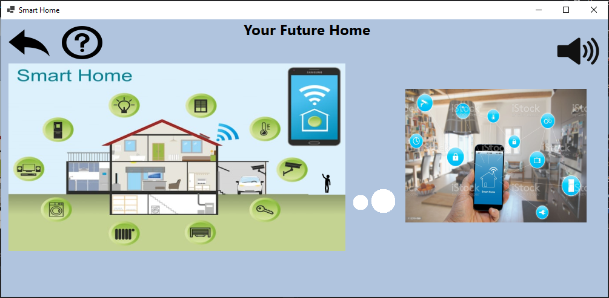

FIRST STEPS
To use the application, you will need the following tools / knowledge:
1) Simple knowledge of User-Interfaces
For example you can press buttons and they may make different reactions. For example they can move or calculate among other things. There are also many clickable images that can be seen by the change of the mouse shape to a pointer.
2) Understanding Constraints
The simulations do not reflect reality, but it takes a bit of imagination to see how they work.
For example, many times the application waits for the user to enter a voice message, but obviously the voice message will not be real, as there is no proper technical support to receive the voice message.
3) Expectations
Many times different users imagine that the application works differently, as everyone perceives reality in their own way.
To solve the above problem, the User-Manual has been created that explains in detail how the application works, as well as this Help, to help users understand how these simulations work for their best service and user experience.
This manual was created with the free trial version of HelpScribble.
This notice will not appear in manuals created with the full version.
This manual was created with the free trial version of HelpScribble.
This notice will not appear in manuals created with the full version.
Menu
The application consists of a set of 5 simulations.
Each simulation runs independently and is not connected in any way with its previous or next.
The image of the main menu can be seen below.
The image contains the following sections.
1) Application
2) Home gone Smart
3) Smart Entrance
4) Smart Services for Old People
5) Delivery gone Smart
6) Smart Planning
Mute/Unmute Button:
Also the user can change at every moment if she wants to hear soft music by clicking this button.
This manual was created with the free trial version of HelpScribble.
This notice will not appear in manuals created with the full version.
Welcome

The image above welcomes users to the app, giving them an idea of what it is planning to present.
For example all these electronic devices are making the house look "smart", also the user has a lot of these applications at his disposal, making the user to imagine the future.
The purpose of the student at this page is to analyze the general purpose of the application, what steps it takes to achieve the goal, as well as to make users to imagine for themselves the cases it may present and make them think about how human needs can be solved in a futuristic "Smart Age".
This manual was created with the free trial version of HelpScribble.
This notice will not appear in manuals created with the full version.
Home Gone Smart
This is the first simulation that appears on the menu from left to right. We can see an overview of the house right here.
Every button and image is clickable.
1) User clicks the on/off image:
Then the light of the room is on or off depending on what picture appears on the overview.
2) The user clicks room button:
Then as we can see from the picture at the right side of the page appears the state of the room that is curretly in. The room light may be on or off, depending on if the user has changed its state or the default state
3) The user clicks the temperature buttons:
Then the temperature of the room changes depending on its default state(differs from room to room). The temperature of a room doesn't change if the user clicks another room.
4) The user presses the slideshow button:
Then a random room appears and it randomly swaps from room to room showing its temperature and its state.
5) The user presses the normal button:
Then no action is made if it's already in normal mode, otherwise it changes to normal mode from the slideshow mode.
This manual was created with the free trial version of HelpScribble.
This notice will not appear in manuals created with the full version.
Smart Entrance
This is the first thing the user sees. Well, the user needs to click at the doorknob to move to the next step.
After clicking, the user opens the door and sees the bright status of her temperature on top of a machine.
Then a screen appears, with 4 different scenarios.
1)The user has low temperature and she can pass.
2)The user has moderate temperature and she needs to wait sometime until she can do it again.
3)The user has light fever suggesting caution.
4)The user has fever and then a self-test appears along with information about the closest diagnostic centers in case the user is positive on the self-test.
This manual was created with the free trial version of HelpScribble.
This notice will not appear in manuals created with the full version.
Smart Sevices for Old People
The first thing a user sees is a camera on a room. This room is supposed to be the main room of any apartment, probably containg the living room and/or the dining room.
The camera is only on the main room, because other rooms such as bathroom and bedrooms are considered private and people are not allowed to put the surveillance cameras in there as it is forbidden by State Law to collect personal information.
For the purposes of this simulation it is supposed to be only on the living room.
When a camera doesn't notice the user for a long time, then a Question appears on the control panel and a friendly female voice asks the elderly if they are okay.
If the elderly don't respond in a specified time, then the local medical authorites are informed to come and check the situation. This is the default case. The user can also make it to call family relatives instead of the local authorities first and only if they dont pick up, the local authorities are informed.
This manual was created with the free trial version of HelpScribble.
This notice will not appear in manuals created with the full version.
Online Delivery
This is the welcoming screen. Hit next.
Then you have the option of choosing from a variety of products that are available in the store.
Make notice though, you have to buy at least one piece of something to forward your process.
You use the + and the - sign to increase or decrease the amount you are going to buy. You can see the amount you will buy in the textboxes.
You can't change the text in the textboxes though.
Then Hit next.
You can see the total amount you will pay in the top. Then after you enter your card details in the textboxes, you can hit Next and the process will be forwarded to the Tok Tok supermarket, which will transfer the goods at your home as soon as possible.
This manual was created with the free trial version of HelpScribble.
This notice will not appear in manuals created with the full version.
Smart Planning
The user opens his cellphone, finds messages application and types 13033 as the recipient. Then, as you can see in the picture, the user can type her schedule according to the form that the user can minimize by pressing the - sign.
For the purposes of this Help we will enter the same message as the form. You should also take care so that the schedule will not be able to process more than 3 activities at a given day. This functionality is coming on to the next update.
After the user clicks 'Send', the user has to decide what transport she will use for every different place she has on her schedule for the day.
After the user clicks 'Next' she has to choose the destination on the Google Maps application.
The google map sign in her cellphone appears and the user has to click on it to open the application. Afterwards she can choose her destination on the maps and then hit 'Send'.
The user has to repeat the above process for every different place she will visit during her day.
As the last step the user has the opportunity to enter notes or any limitations for the algorithm to take note of.
The user clicks on the next image and the placeholder disappears. The placeholder can be seen with the Light Italic Font it uses.
At the finale, the user can see the best route the program found for her own destinations and also the algorithm proposes a schedule for the user.
For the purposes of this simulation, the application uses as first location the user's home which is calculated randomly on the map.
This manual was created with the free trial version of HelpScribble.
This notice will not appear in manuals created with the full version.